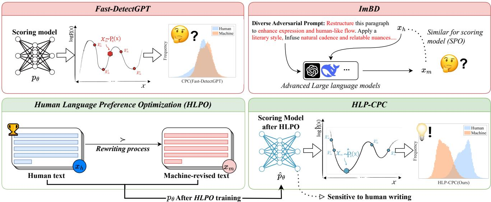
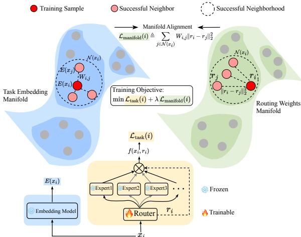
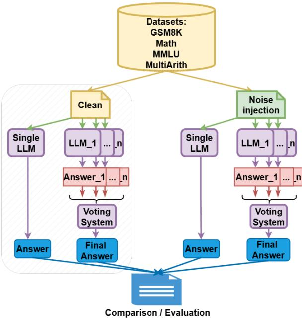
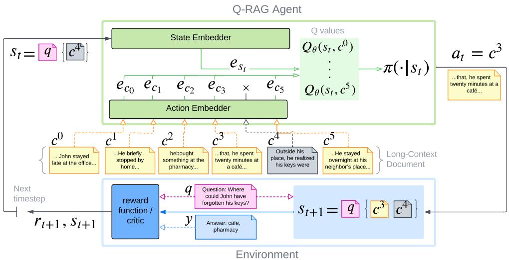
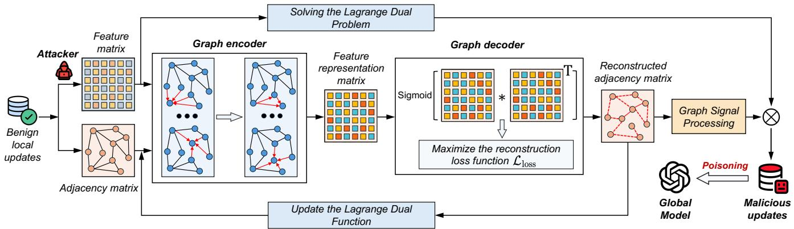

微观深度解读
为您精选了 6 篇高质量 AI 论文的深度解析
#1
人类语言偏好检测
机器生成文本
修订文本识别
人类语言偏好优化
模型敏感性
简介：本文提出了人类语言偏好检测（HLPD）方法，旨在解决在黑箱环境下准确识别机器生成和修订文本的挑战。HLPD通过人类语言偏好优化（HLPO）机制，增强模型对人类写作风格的敏感性，显著提高了检测性能。在多项实验中，HLPD在识别GPT系列模型修订文本时，AUROC表现优于现有基线，展示了其卓越的准确性和鲁棒性。

#2
路由流形对齐
稀疏混合专家
任务理解
专家选择
泛化能力
简介：本文提出了路由流形对齐（RoMA）方法，旨在解决稀疏混合专家（MoE）模型中任务理解与专家选择之间的不对齐问题。通过引入流形正则化，RoMA实现了路由权重与任务嵌入的对齐，显著提升了模型的泛化能力和准确性（提升7-15%），同时保持低推理成本。实验验证了RoMA在多个基准上的优越性能，增强了小模型的竞争力。

#3
多代理大语言模型
鲁棒性
对抗性输入
准确性与鲁棒性分离
Agent Forest
简介：本文提出了一种统一的采样与投票框架（Agent Forest），系统评估多代理大语言模型（LLM）在面对数学问题时的鲁棒性。研究表明，尽管增加代理数量能提高准确性，但对抗性输入的鲁棒性并未显著改善，尤其是人类拼写错误对性能影响更大。这一发现揭示了准确性与鲁棒性之间的分离，为未来AI系统的设计提供了重要见解。

#4
模型指令弱点值
大语言模型
数据选择
指令调优
高质量数据
简介：本文提出了一种新颖的“模型指令弱点值”（MIWV）指标，用于量化指令数据对大语言模型（LLM）能力提升的重要性。通过比较模型在使用和不使用特定指令样本时的性能差异，MIWV能够有效筛选出最具价值的高质量数据。实验表明，仅使用前1%至15%的MIWV高分样本进行指令调优，模型性能显著优于使用全量数据集，验证了“少即是多”的策略。

#5
Q-RAG
多步骤检索
马尔可夫决策过程
强化学习
长上下文
简介：本文提出了Q-RAG方法，通过将多步骤检索建模为马尔可夫决策过程，利用强化学习高效训练嵌入器，实现长上下文中的复杂问答。Q-RAG在多个基准测试中表现出色，显著降低资源消耗并提高检索准确率，尤其在处理超长文本时展现出优越性。

#6
模型中毒攻击
图表示学习
联邦学习
异构智能代理
安全措施
简介：本文提出了一种新型的模型中毒攻击框架GRMP，利用图表示学习技术，通过构建参数相关图和生成恶意模型，成功绕过现有防御机制，显著降低联邦学习系统的准确性。该研究揭示了在异构智能代理环境中，现有防御的脆弱性，强调了对更强安全措施的需求。
